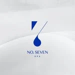
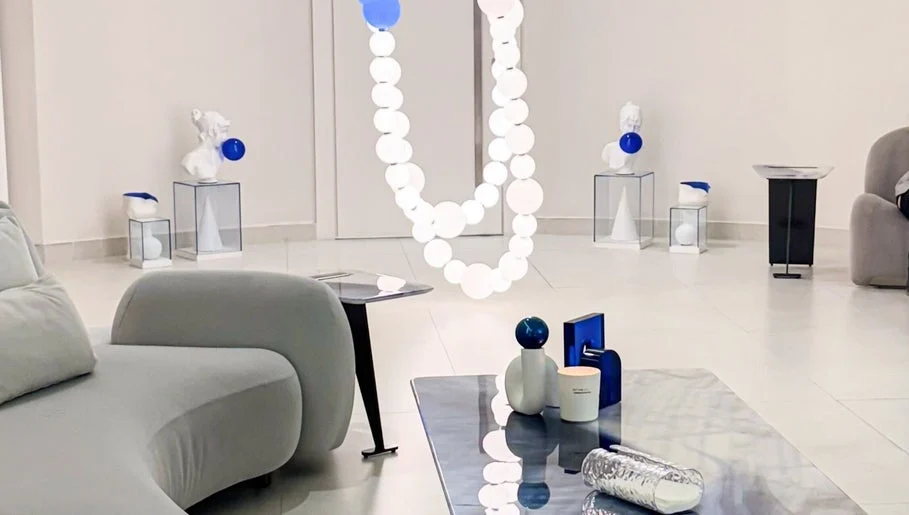

نمبر سڤن
مساحة للجمال،
من أول التفاصيل.
خدمات متعددة تحت هوية نمبر سڤن في الفرع النسائي بالخبر، من الأظافر والشعر إلى المكياج والمساج. استعرضي الأقسام ثم راجعي الخيارات والأسعار على منصة الحجز.
تعرّف على الموقع
نمبر سڤنNo.7احجزي موعدكالخبر، البندرية — القسم النسائي
الشعر، الأظافر والمكياج والعناية في نمبر سڤن للسيدات. قائمة واضحة لتخططي لزيارتك في البندرية.

على ذوقك
ابدئي من القسم الذي يهمك، ثم استعرضي الخيارات.
الصور والأعمال
صور من الحساب العام وصفحة المنشأة؛ اضغط على أي صورة لعرضها كاملة.
نمبر سڤن
خدمات متعددة تحت هوية نمبر سڤن في الفرع النسائي بالخبر، من الأظافر والشعر إلى المكياج والمساج. استعرضي الأقسام ثم راجعي الخيارات والأسعار على منصة الحجز.
تعرّف على الموقعخطّط لزيارتك
اختاري ما يناسبك، ثم راجعي اختياراتك قبل الانتقال إلى الحجز.
قائمة منشورة على Fresha بتاريخ ٢١ سبتمبر ٢٠٢٦. قد تختلف الأسعار حسب الخيارات والعروض؛ السعر والموعد النهائيان على منصة الحجز.
يسعدنا اللقاء
No7 Spa Ladies , Al Bandariyah, King Faisal Ibn Abd Al Aziz, Al Khobar, Eastern Province
+966 50 027 5831نمبر سڤن